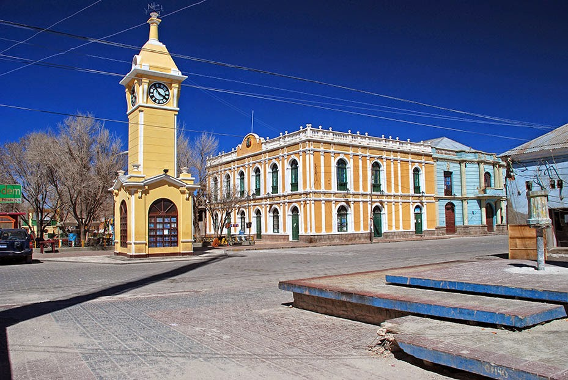

Uyuni, la hija predilecta de Bolivia


Información general
Uyuni es una ciudad ubicada en el departamento de Potosí, Bolivia. Es conocida como la "hija predilecta de Bolivia" y es famosa por su hospitalidad y su historia ligada al ferrocarril.
Lo que más me gusta de mi ciudad
Lo que más disfruto de Uyuni es la tranquilidad y la facilidad para encontrar todo lo que necesito cerca. Además, me encanta estar tan próximo al salar, especialmente en la temporada de lluvias, cuando el paisaje se transforma en un espejo gigante que une el cielo y la tierra, creando una experiencia única.
Atractivos turísticos
- Salar de Uyuni: Es el mayor desierto de sal continuo y alto del mundo, con una superficie de más de 10,000 km². Durante la temporada de lluvias, el salar se convierte en un gigantesco espejo natural, reflejando el cielo y creando paisajes únicos. Es una fuente importante de litio y sal, y atrae a miles de turistas cada año por su belleza y por actividades como excursiones en 4x4, fotografía y observación de estrellas.
- Cementerio de trenes: Un lugar histórico donde se pueden ver antiguas locomotoras y vagones, testigos del pasado ferroviario de la región.
- Lagunas de colores: Cercanas al salar, famosas por sus tonos y fauna, como flamencos.
Datos curiosos del Salar de Uyuni
- Mar de Sal: El Salar de Uyuni es el desierto de sal más grande y alto del planeta.
- Espejo del Cielo: En época de lluvias, una capa de agua lo convierte en un espejo natural gigante.
- Cementerio de Trenes: Un museo al aire libre con locomotoras abandonadas del siglo pasado.
- Tesoro de Litio: Bajo la sal se esconde la reserva de litio más grande del mundo.
- Islas de Cactus: En medio del mar de sal, hay islas con cactus de más de 10 metros de altura.
Clima
Uyuni tiene un clima frío y seco, especialmente durante el invierno, con temperaturas que pueden descender considerablemente por la noche.
Frase destacada
"Uyuni, donde la inmensidad del salar se une con el cielo y la historia ferroviaria de Bolivia."